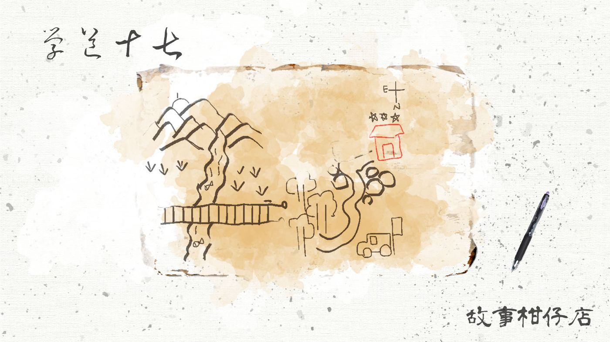
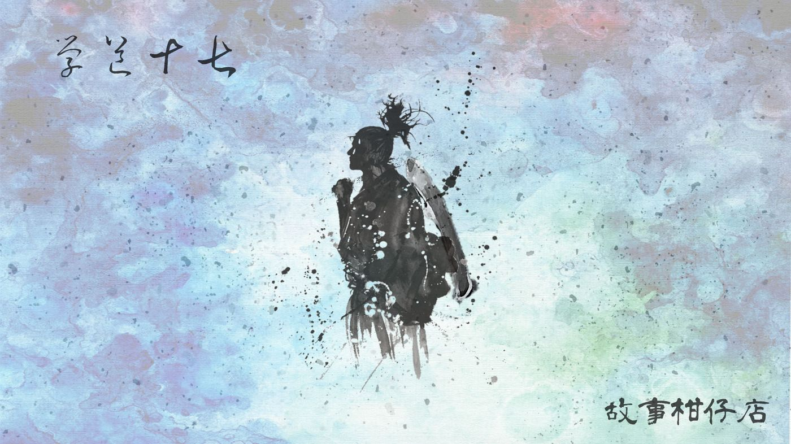
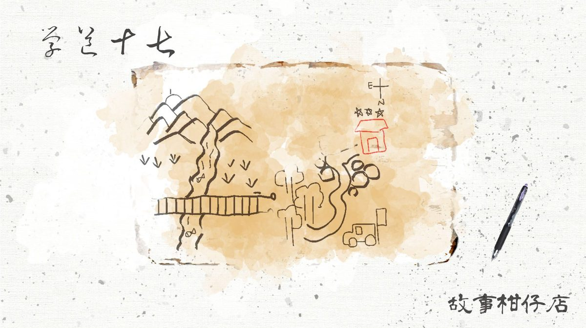

玄墨行者．學道（十七）：舊衣

那天早上，大曲特別覺得奇怪。
天還暗著，月亮來不及走，他便下床，出孤峰，摸黑到一旁的灶上生火煮早餐。很簡單的伙食：白粥、醬瓜、腐乳，再往油鍋煎雞蛋。
對他來說，早起不算是苦差事，清清靜靜，他特別喜歡在一片灰霧中燃起火光的感覺。特別溫暖，特別明亮。只要輪到他當班，大夥肯定能準時開飯；哪像輪到拾兒掌勺時，讓師父等得吹鬍子瞪眼睛。
不過，通常天璣在山上時，大曲就不會是最早起的。
時常，他才揉著眼睛走出孤峰，便看見天璣從林中湖散步回來，也不直接進房補眠，一屁股坐在灶旁看大曲生火煮飯。有時看著鍋中物逐漸沸騰，有時自顧自撥弄琴弦，有時不知思索著什麼，偶爾閒聊兩句。
「大曲，不累嗎？」天璣右手撐腮，問道。
「不累，我很早就睡了。三師叔不去休息嗎？這兒很熱。」
「我是說，你老這麼規矩，不累嗎？」
聽了這句話，大曲往灶裡添柴的手臂都膠住了，火光搧著他的臉，暖烘烘的。
大曲不知如何回答，天璣站了起來，「我回房躺一下。」
正要轉身走，他突然又交代：「蛋黃半熟，謝謝。如果蛋白能焦一點就太完美了。」說完，拍拍大曲的背，走了。
大曲抬頭，看見晨曦照得群山一地鎏金。
餐桌上，天璣咬下荷包蛋，偷偷給他一個讚許的微笑。而天樞只是面無表情，機械式的，一口一口將餐食往嘴裡送。
從此，他更期待輪班煮早飯的日子。
可是那天，天璣沒有來。
大曲一邊做早餐，一邊疑心，好不容易捱到煮完，發現餐桌上獨缺天璣與拾兒。
「這對師徒真不像話。去叫他們吧。」天樞臉色凝重如山。
後來的事情，大曲恍恍惚惚有點記不得了。總之他去敲了廂房門，拾兒滿臉睡意開了，然後他們發現天璣叫不醒……。
天璣死了。
連睡在隔壁的拾兒都沒察覺。天葬之後，拾兒還是很難察覺：師父不在了。
他想起虹月這陣子老嘟噥著天璣消瘦得不像話，眼窩下凹，眉骨高聳，「像整個元神都給掏走了。」她是這樣形容的。
如果早日將虹月的話放在心上，也許就能挽回師父？
然而這豈是他能決定的。回想那師徒共度的最後一晚，師父說的話，如今想來都是遺言，都是道別。而他竟那樣希哩呼嚕地揮霍掉了。
回到廂房，天璣慣穿的苔色長袍整整齊齊放在角落，起了結實累累的毛球。長袍下方壓著一個小硬紙箱。拾兒記得，那是好些年前，天璣從山下帶的手工餅乾的包裝盒。
拾兒打開箱子，裡頭放著瑤光送的手機，以及一張十分粗略的手繪地圖。
大山、小溪、急瀑，全成了直得或橫的粗糙筆畫，還有一圈一圈的東西。拾兒看半天才認出，原來那是石頭。
「畫石頭做什麼啊……。」他認得出來那出自師父之手，天璣一向很沒有繪畫天分，字又醜。
總之，翻過石頭之後，有一條歪歪扭扭的小路，路邊特意用紅筆畫了一個勉強看得出來是房子的形狀。屋頂上方還打了三顆星星，宣示它的重要。
那三顆大小不一致的五芒星逗笑了拾兒，幸好紙張左上角標示著東西南北，尚可辨認方位，否則拾兒真的要懷疑師父在弄他。
地圖背面寫著短短一句：「拾兒：四下無人，不妨彈首〈似是故人來〉。你應該練好了？」
他愈來愈確定師父根本預知了自己的死亡，才安排得這麼妥當。然而師父又何須留下這麼多線索，而不直接告訴他？
拾兒想破了頭，依舊理不出頭緒。
那些雜物下方，墊著另一件苔色長袍。摸起來滑順而有點漿硬，簇新的證明。
這也是玄墨一門的規矩。當傳人正式入門，做師父的就要為徒弟準備一套新衣，待他能獨撐大局那日，便有了穿上新衣的資格。
拾兒放下新衣，抄起一個舊得千絲萬縷的小背包，將手機和地圖一股腦塞了進去。他不想等了，哪怕得偷溜，也要弄清楚來龍去脈。
接著，他抖開天璣舊袍，凝視良久，最後將雙手伸進袖裡。
萬事皆備，他唰地拉開門，站在門口的天樞嚇了一大跳。
「你要去哪？我正要找你。」
－－－－－
#新連載依舊兩天一篇每晚準時六點半喔
#請人客多多指教
#記得去各大書店買我們的書故事柑仔店哩

